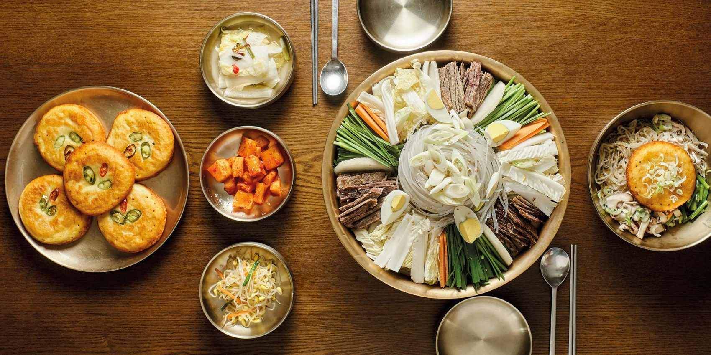
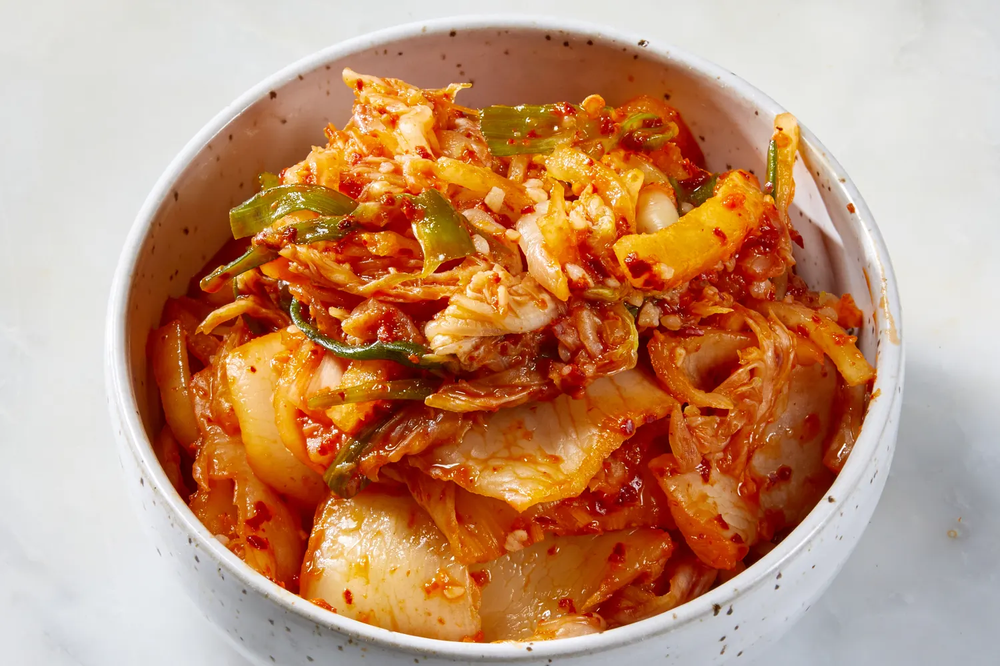
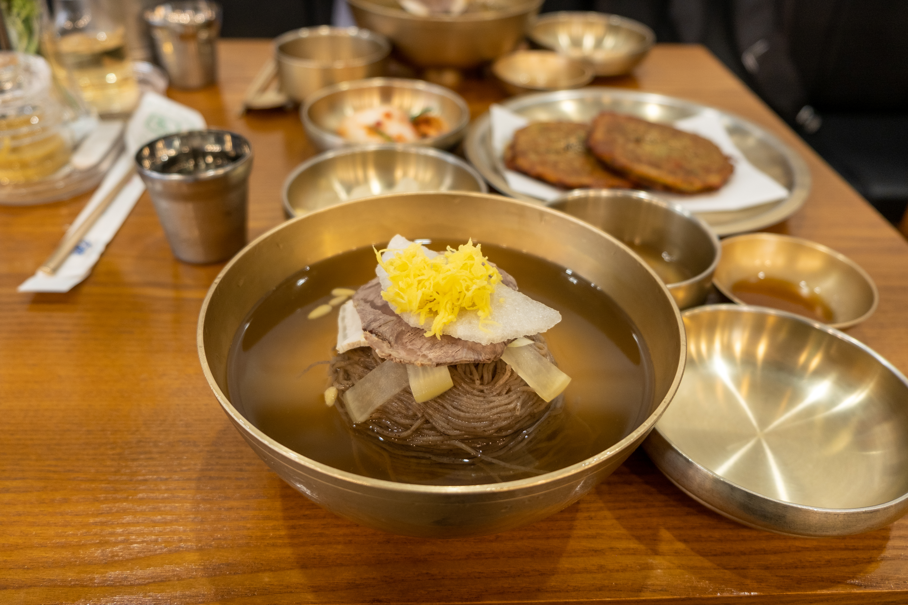
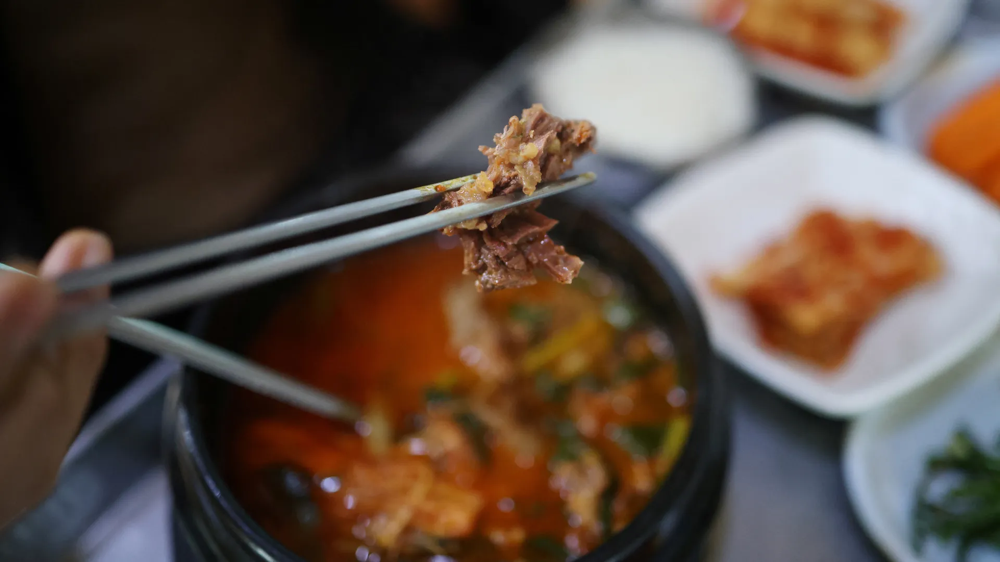

Dining in the People's Republic
The Official North Korean Food Guide. If you're looking for exotic, once in a lifetime cusine, you're in luck. Unlike capitalist countries, you won't have to make tough decisions like where you should eat. Your tour guide will tell you what to eat, how much to eat, and of course, when you're eating.

Kimchi
There are two types of Kimchi in this world, dirty kimchi, and the more refined People's Kimchi. While still the same fermented dish, the People's Kimchi uses less dirty seafood in the seasoning, as well as fewer chilies. This results in a cleaner, more palatable dish, that nourishes and provides probiotics without the nasty afterburn in the toilet later.

Pyongyang Cold Noodles
Pyongyang Naengmyeon is a dish best served cold. Traditionally made with pheasant or beef broth, this dish is sure to cool you down in the hot Pyongyang summers. Since Supreme Leader Kim is a firm believer in climate change, he believes that his people do not need A/C in the hot summers, so they rely on ice-cold buckwheat noodles to cool down.

Sweet Meat
Dangogi or "sweet meat" is one of the most sought-after delicacies in the People's Republic. Traditionally consumed during the "dog days" of summer, this delicious meat is known for both its stamina-enhancing and energizing properties. Unfortunately, after consumption, you might start to view the dogs at your local pound a bit differently, and you may wonder why your mouth is watering uncontrollably.

Pine Tree Bark
If you want to truly live like a local, then you may be interested in trying "wild foods," such as grass and tree bark. For low-budget birthday parties, locals will mix up grass, tree bark, and rice roots to create a Pine Cake. For dessert, you may be lucky enough to source a bit of protein, like frogs or mice.